10. Well Hydraulics & Groundwater Management#
Readings#
Videos#
Spreadsheets/Scripts#
Warning
Spreadsheets with (MACROS) may not run in modern Excel - you may have to rewrite the MACROS using VBA. As time permits, we will simply write them in JupyterLab.
Theim Model (to show interference effects and map a regional gradient onto a drawdown distribution) WELL_STY.XLS
Theis Model (MACROS) TheisModel.xlsm (vba macros)
Hantush Leaky Model (MACROS) HantushLeakyModel.xlsm (vba macros)
Theis TC Model (Described Here) TC_Theis.xls
Theis TC Model (Described Here)TC_Theis.ods
Jacobs Solution Jacob.xls
Jacobs Solution Jacob.ods
Well Hydraulics & Pumping Tests#
Understanding how groundwater responds to pumping is a foundational skill in hydrogeology and water resource engineering. This section focuses on idealized analytical models that provide valuable insights into how aquifers behave when stressed by wells.
Cone of Depression and Drawdown When a well begins to pump water from an aquifer, the water level near the well drops, forming a cone-shaped surface in the water table or potentiometric surface. This ‘cone of depression’ reflects the declining hydraulic head, and the vertical distance between the pre-pumping level and the current water level is termed drawdown. Understanding drawdown is essential to assess well interference, sustainability, and required pump energy.
Theis and Thiem Equations for Well Analysis The Thiem equation is used for steady-state radial flow to a well in a confined aquifer and assumes pumping has been occurring long enough for conditions to stabilize (the solution was derived in prior lesson). In contrast, the Theis solution (derived below) handles transient conditions, where drawdown changes over time. These models help interpret pumping test data, a standard practice in aquifer characterization, and help predict aquifer water levels over large time and spatial scales.
Groundwater Recharge and Depletion Issues Pumping alters the natural balance between recharge (inflow) and discharge (outflow). If withdrawal exceeds long-term recharge, depletion occurs, resulting in declining water levels and potential impacts on streams, ecosystems, and surface infrastructure. Sustainable well design requires not just solving equations, but understanding how those equations relate to aquifer capacity and regional water budgets.
Transient Well Hydraulics#
Transient models allow us to predict how aquifers behave during the early stages of pumping or recovery after stress has been removed. These models help engineers and scientists interpret the time dimension of aquifer response, which is critical for both design and regulation.
Theis Solution for Transient Flow to a Well
The Theis solution assumes a homogeneous, isotropic confined aquifer and applies a line-source analogy to describe drawdown as a function of time and radial distance from the well. The solution includes the exponential integral function, which is handled numerically in most practical settings. While the assumptions are idealized, the Theis model remains a workhorse for short-term test interpretation.Concept of Storativity and Time-Dependent Drawdown
Storativity (or storage coefficient) is a dimensionless measure of how much water an aquifer releases (or stores) per unit decline in head. It’s essential in transient analysis because it controls how quickly drawdown spreads. Confined aquifers have very small storativity values, often < 0.005, while unconfined aquifers have values closer to specific yield (0.1–0.3).
Tip
When analyzing pumping test data, early-time behavior reveals transmissivity, while late-time trends inform storativity.
Cooper-Jacob Approximation for Late-Time Drawdown
The Cooper-Jacob method is a simplified version of the Theis solution, valid for late-time data where the exponential integral can be linearized. This approximation turns the drawdown-time relationship into a straight line on a semi-log plot, simplifying parameter estimation. It is widely used in the field due to its practical ease and good agreement with late-time observations.
Groundwater Management & Sustainability#
Beyond the equations lies the real-world challenge of using groundwater resources responsibly. Modern groundwater management blends hydrogeologic modeling with legal, ecological, and socioeconomic factors.
Overdraft, Subsidence, and Long-Term Water Balance
Overdraft occurs when pumping exceeds natural recharge over long timeframes. This can lead to aquifer compaction and land subsidence, especially in compressible formations like clays. Once compacted, the aquifer loses storage capacity permanently. Long-term planning involves creating water budgets that match human demands with safe yields to avoid irreversible damage.Groundwater Protection and Contamination Risks
Groundwater is vulnerable to contamination from surface spills, leaky tanks, septic systems, and agricultural runoff. Unlike surface water, contaminated aquifers may take decades or centuries to recover due to slow natural attenuation. Engineering design must consider setbacks, wellhead protection zones, and monitoring programs to safeguard these resources.Case Studies of Aquifer Depletion and Management Strategies
Examples from the Ogallala Aquifer (Great Plains) and the Central Valley of California show both the consequences of unsustainable use and the potential of management tools like managed aquifer recharge (MAR), regulated pumping, and market-based allocations. Engineers must balance short-term needs with long-term aquifer health.
10.1 Unsteady Flow in Confined Aquifer (Theis Solution)#
There are two ways to proceede - just apply the groundwater flow equatrions or use a plasuibility argument to infer what solutions might look like.
Inferring Equation Structure#
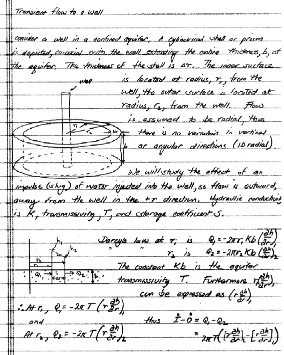
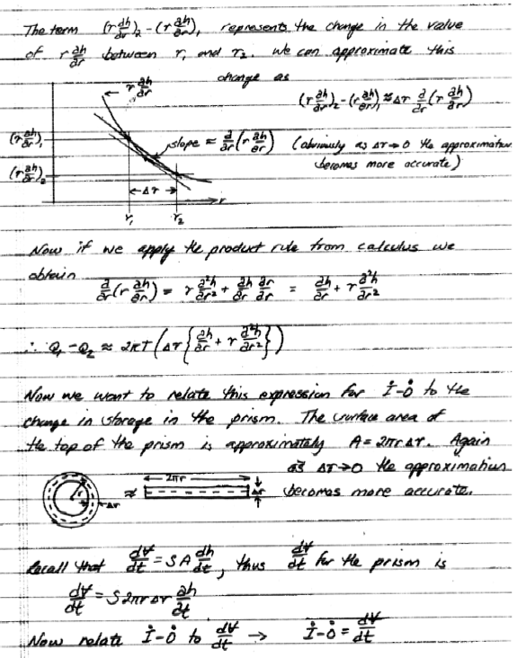
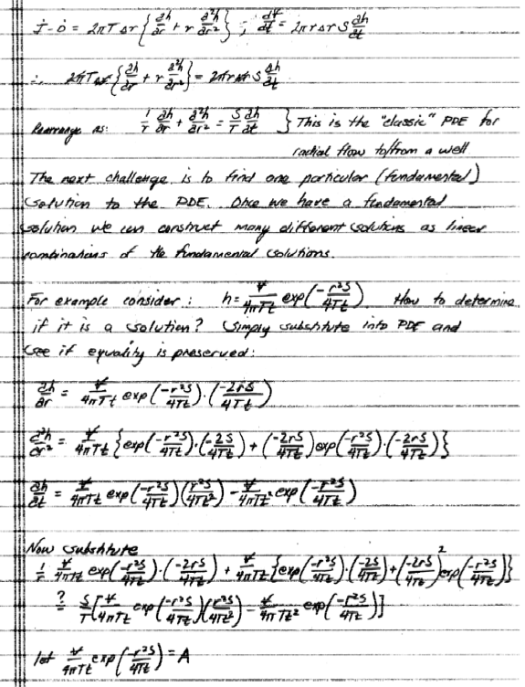
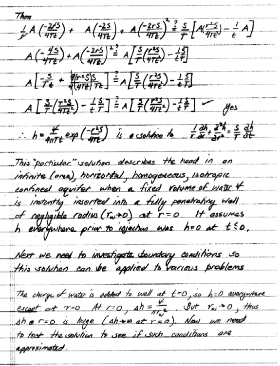
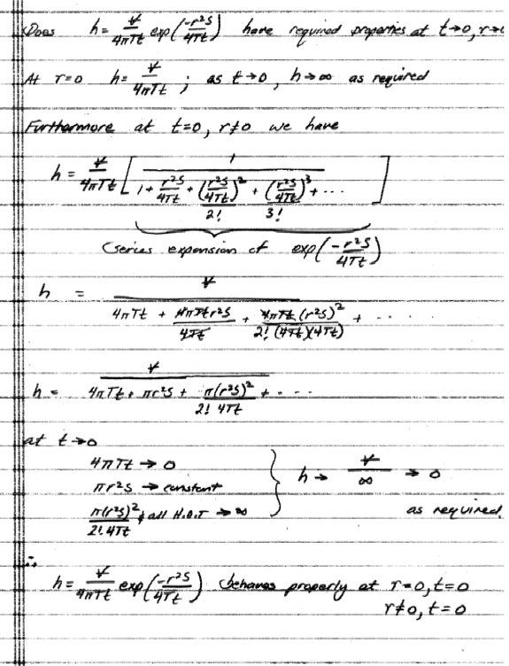
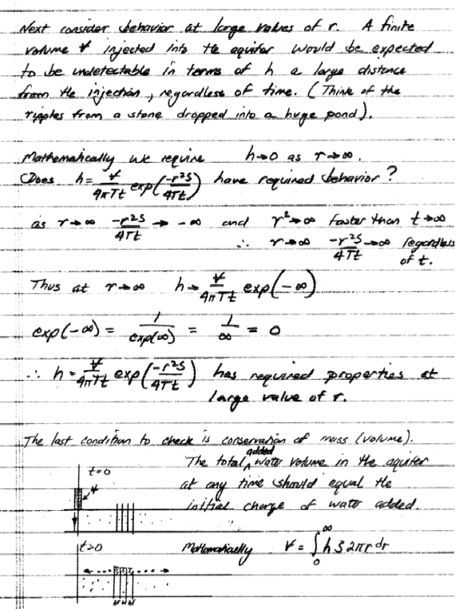
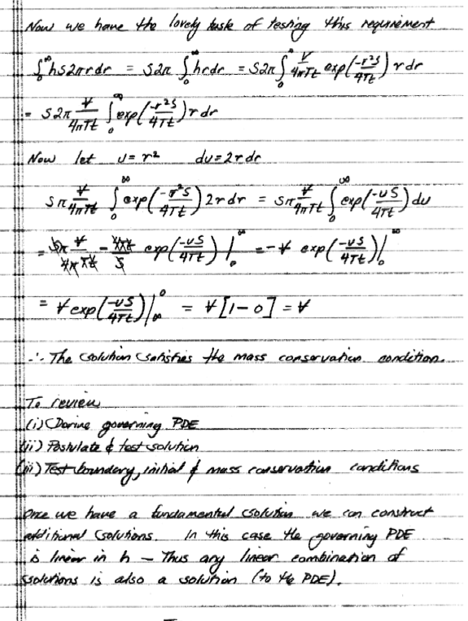
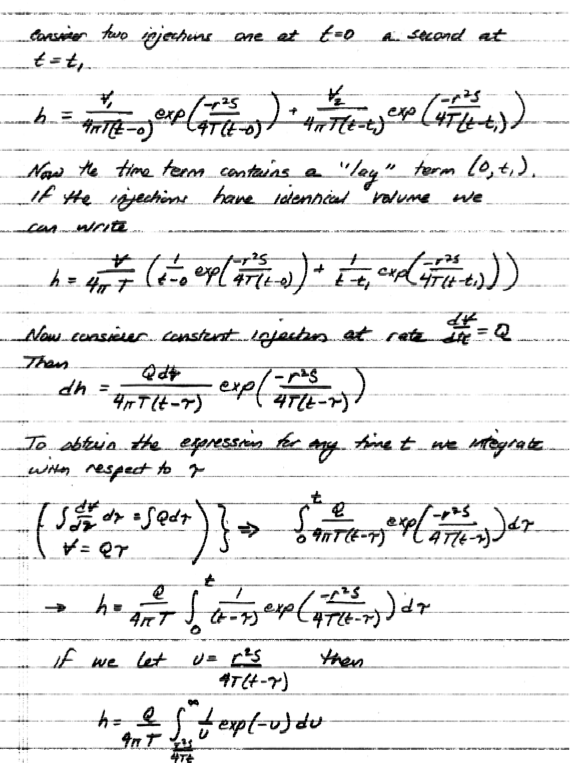
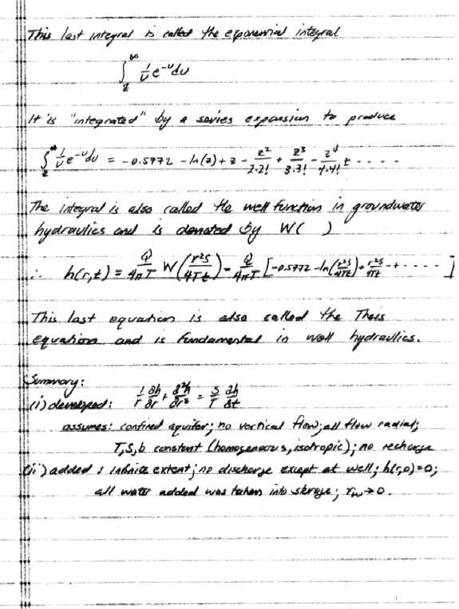
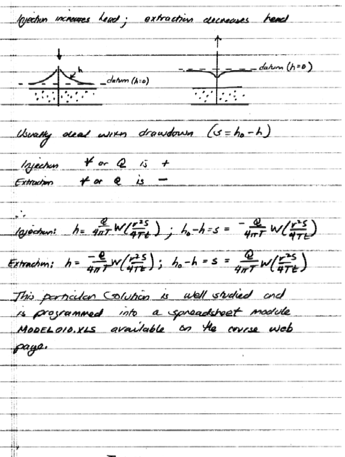
Apply Groundwater Flow Equations#
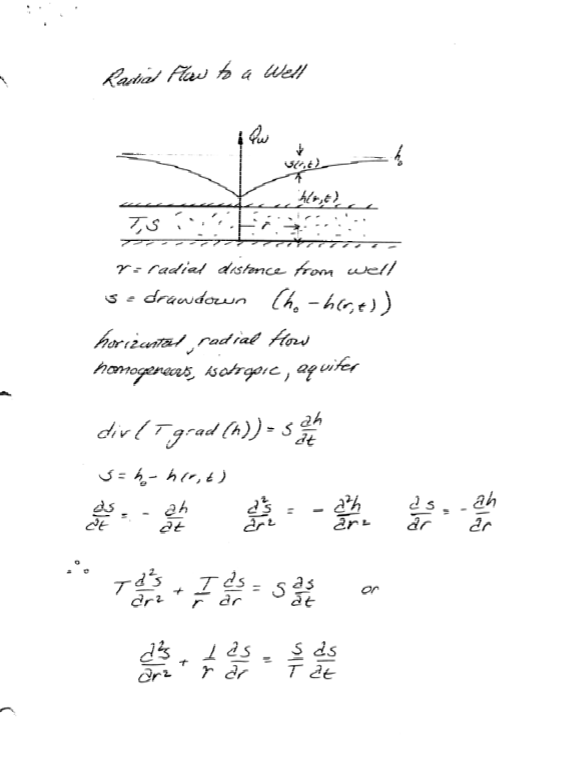
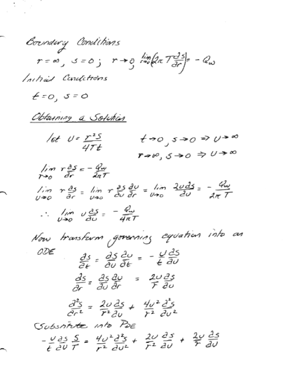
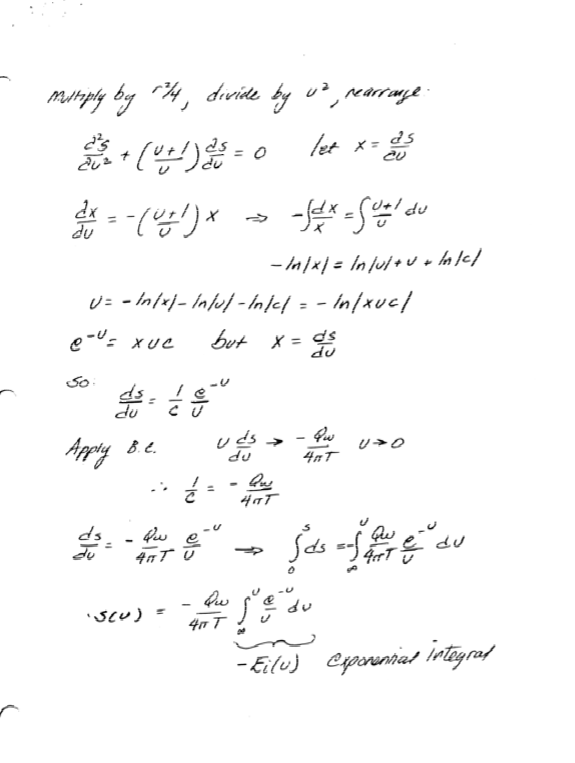
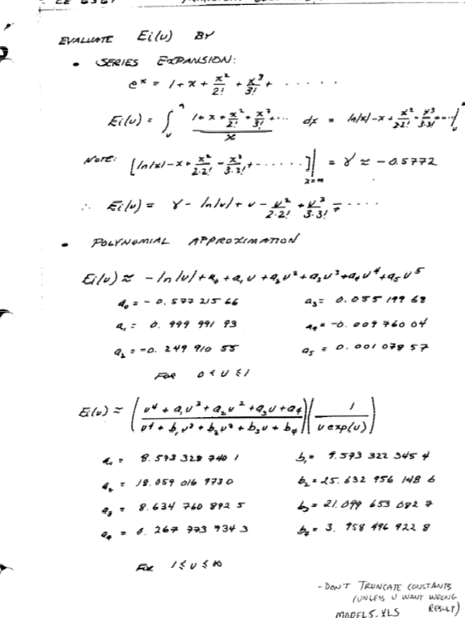
Superposition for multiple well impacts at an arbitrary field point**#
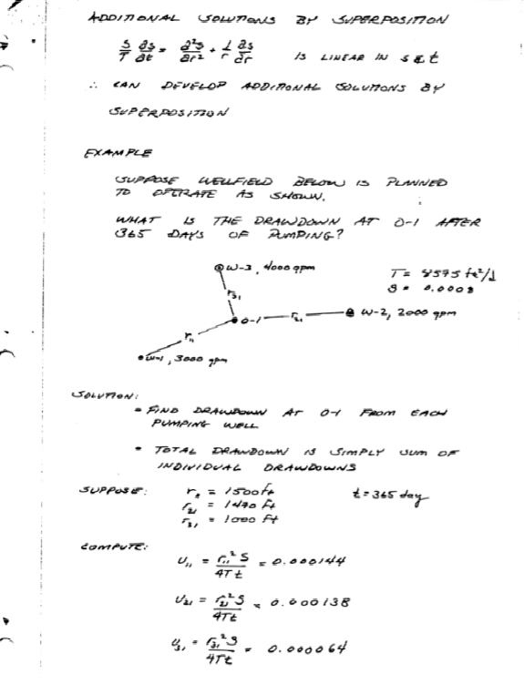
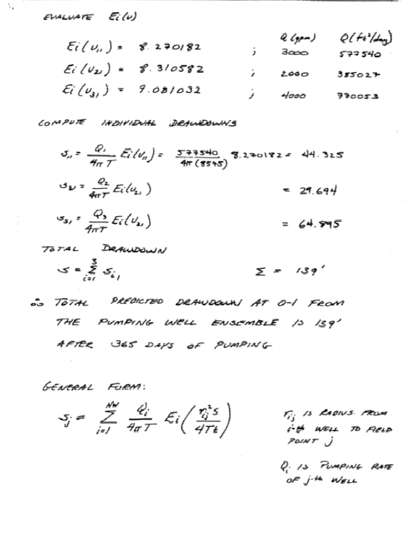
Convolution (superposition in time) for time varying pump rates**#
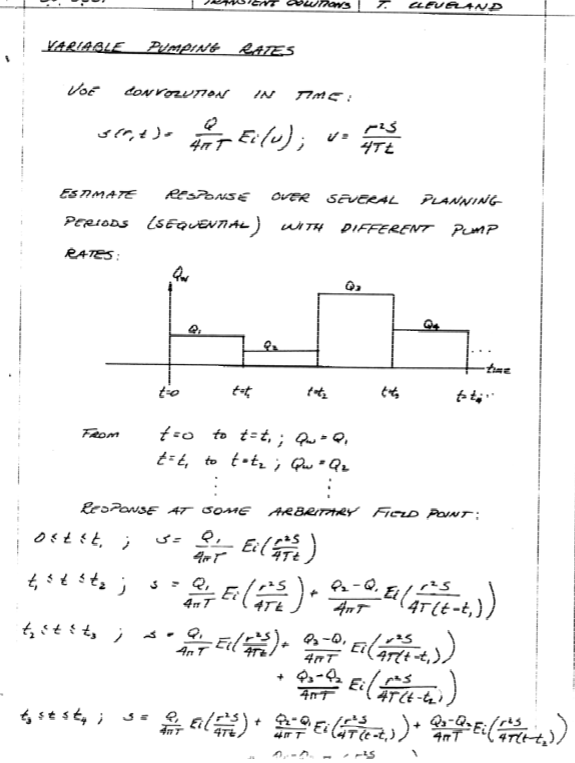
def W(u): # Theis well function using exponential integral
import scipy.special as sc
w = sc.expn(1,u)
return(w)
def s(radius,time,storage,transmissivity,discharge): # Drawdown function using exponential integral
import math
u = ((radius**2)*(storage))/(4*transmissivity*time)
s = ((discharge)/(4*math.pi*transmissivity))*W(u)
return(s)
Example to illustrate the homebrew script. The relevant problem parameters are:
\(K = 14.9 m/d\)
\(b = 20.1 m\)
\(T = Kb = 299 m^2/d\)
\(S = 0.0051\)
\(Q_w = 2725 m^3/d\)
\(r = 7.0 m \)
\(t = 1 d\)
radius=7.0
time=1.0
storage=0.0051
transmissivity=299
discharge=2725
print("Drawdown is ",round(s(radius,time,storage,transmissivity,discharge),2)," meters")
Drawdown is 5.73 meters
10.2 Leaky Confining Layer (Hantush (1956) Solution)#
Situation Set-Up and Mathematical Considerations#
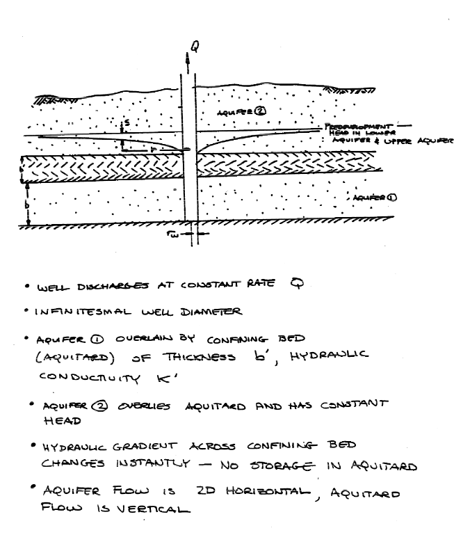
Leakance Considerations#
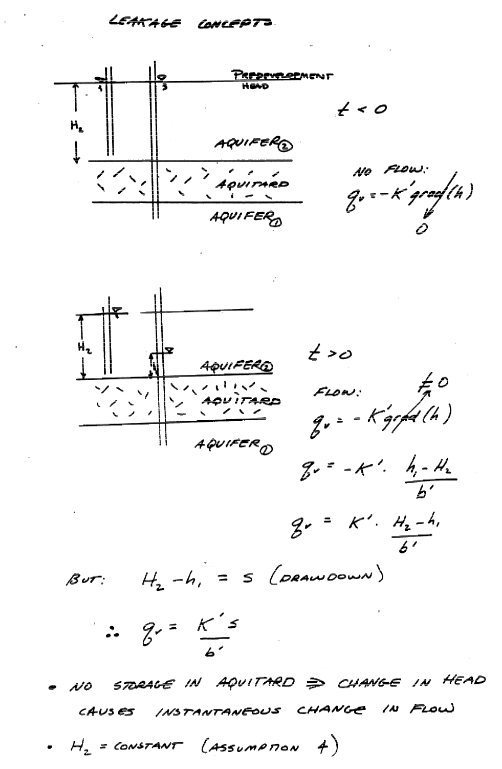
Mathematical Model#
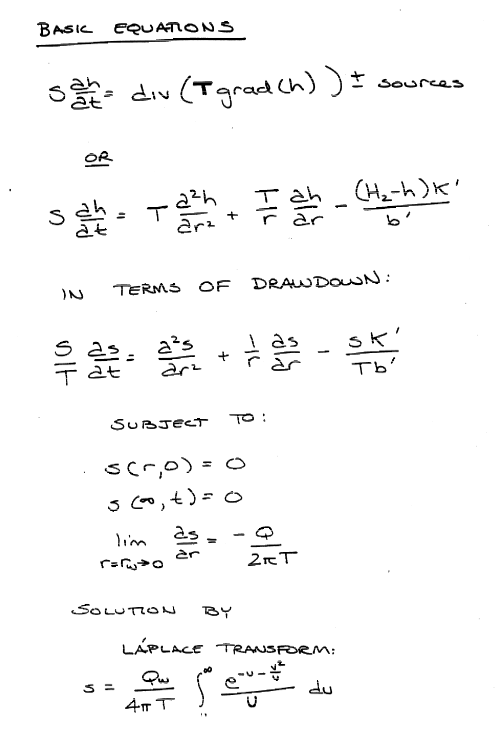
Solutions#
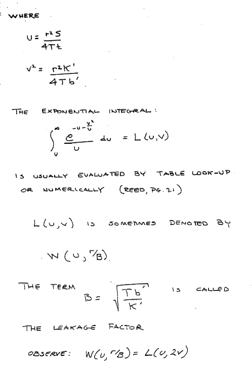
def wh(u, rho): # Hantush Leaky aquifer well function
import numpy
"""Returns Hantush's well function values
Note: works only for scalar values of u and rho
Parameters:
-----------
u : scalar (u= r^2 * S / (4 * kD * t))
rho : sclaar (rho =r / lambda, lambda = sqrt(kD * c))
Returns:
--------
Wh(u, rho) : Hantush well function value for (u, rho)
"""
try:
u =float(u)
rho =float(rho)
except:
print("u and rho must be scalars.")
raise ValueError()
LOGINF = 2
y = numpy.logspace(numpy.log10(u), LOGINF, 1000)
ym = 0.5 * (y[:-1]+ y[1:])
dy = numpy.diff(y)
wh = numpy.sum(numpy.exp(-ym - (rho / 2)**2 / ym ) * dy / ym)
return wh
wh(0.625,5);
Example to illustrate homebrew script
The relevant problem parameters are:
\(K = 0.73 m/d\)
\(b = 5.2 m\)
\(T = Kb = 3.8 m^2/d\)
\(S = 0.0035\)
\(Q_w = 28 m^3/d\)
\(b' = 1.1 m\)
\(K'_v = 5.5 \times 10^{-5} m/d\)
Notice in the example the author tests some requesite assumptions before proceeding to look up values in a table (also a good idea here, but we will just be lazy and apply the script)
def leaky(radius,time,storage,transmissivity,discharge,leakance): # Leaky drawdown function using Hantush solution
import math
u = ((radius**2)*(storage))/(4*transmissivity*time)
roB = radius/leakance
leaky = ((discharge)/(4*math.pi*transmissivity))*wh(u,roB)
return(leaky)
import math
radius=[1.5,5.5,10,25,75,150]
ddn=[0 for i in range(len(radius))] # list of zeros to hold results
# simulation constants
time = 1 # 1 day
transmissivity = 3.8
storage = 0.0035
discharge = 28
bprime = 1.1
Kvert = 5.5e-05
# computed constants
B = math.sqrt((transmissivity*bprime)/Kvert)
# compute the drawdowns
for i in range(len(radius)):
ddn[i]=leaky(radius[i],time,storage,transmissivity,discharge,B)
# print results
print("radius drawdown ")
for i in range(len(radius)):
print(round(radius[i],1),round(ddn[i],3))
radius drawdown
1.5 4.089
5.5 2.57
10 1.879
25 0.874
75 0.079
150 0.001
10.3 Leaky Confined (with storage in the confining layer)#
Situation Set-Up and Mathematical Considerations#
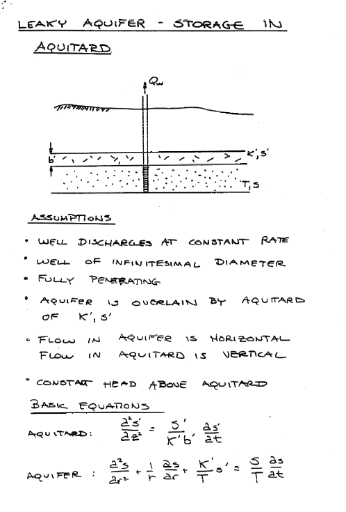
Leakance Considerations#
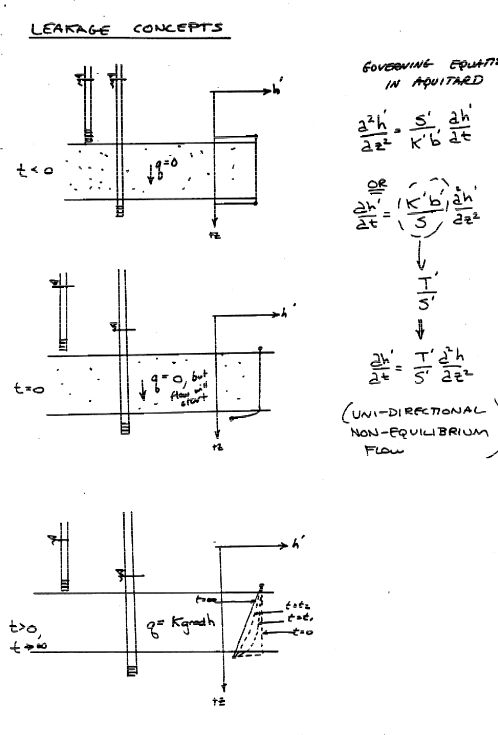
Mathematical Model#
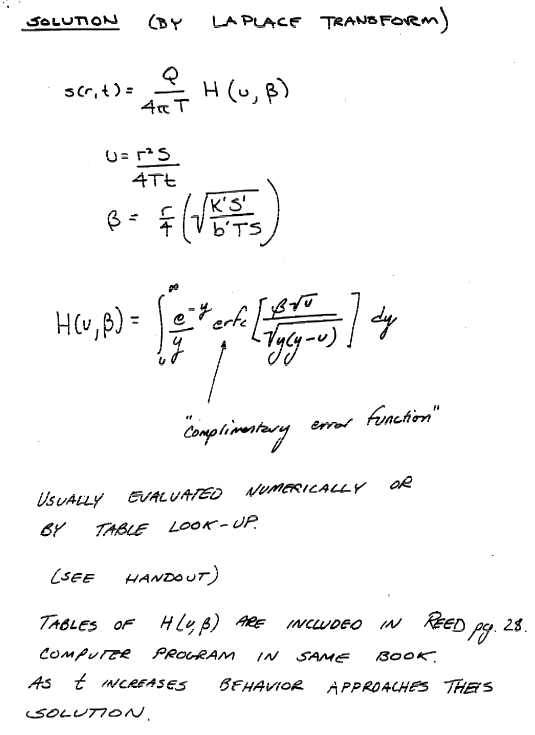
Solutions#
Usually solutions are approximated for early-time, mid-time, and late-time behavior and use combinations of Theis solutions and finite-term series. The actual integral can certainly be evaluated if needed, but modern (circa-2023) approaches would probably be to finite-difference the crap out of things and take the numerical solution as good enough!
10.4 Constituient Transport#
Subsurface Contaminant Hydrology
Advection-Dispersion Equation
Selected Analytical Solutions
Capture Zones
Exercise(s)#
# Autobuild exercise set